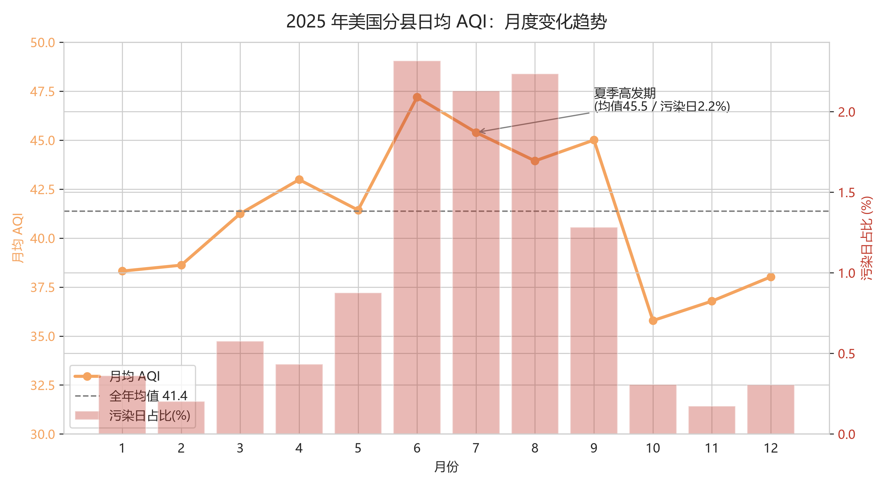
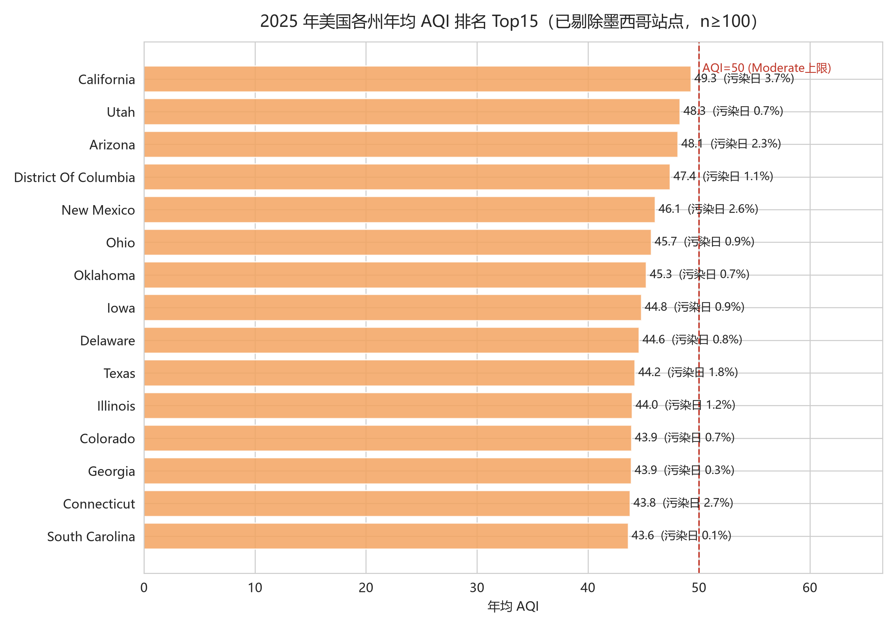
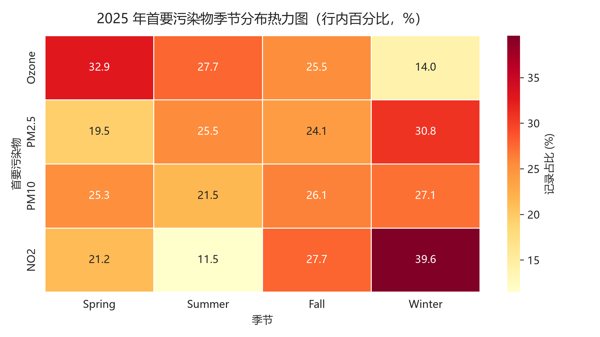

空气污染是全球最主要的公共健康威胁之一。美国环保署（EPA）将多种污染物浓度换算为统一的空气质量指数（AQI），并按健康影响分为六级：当 AQI 超过 100 时，儿童、老年人及呼吸系统疾病患者等敏感人群的健康将受到影响。
本项目基于 EPA 2025 年全年分县逐日 AQI 监测数据（原始 323,653 条，清洗后 323,633 条），运用 Pandas 完成数据清洗与一致性审计，从时间、空间、污染物三个维度开展探索性分析（EDA），构建"何时、何地、因何种污染物，谁的健康面临风险"的三维画像，并输出可直接落地的分季治理建议。
| 指标 | 结果 |
|---|---|
| 数据规模 | 原始 323,653 条 × 10 字段；清洗后 323,633 条，覆盖 54 个州/地区、767 个县级行政区 |
| 数据质量 | 剔除 20 条越界异常记录（占 0.006%），其余无重复、无缺失 |
| 关键发现 | 夏季为风险高发期；加州南部三县为持续暴露区；臭氧与 PM2.5 呈显著季节切换 |
| 产出物 | 清洗脚本、分析脚本、可视化图表 ×3、业务结论 ×3 |
| 项目 | 说明 |
|---|---|
| 数据来源 | 美国环保署（U.S. EPA）官方 Air Quality Index 监测数据 |
| 数据文件 | daily_aqi_by_county_2025.csv（公开数据，ZIP 压缩包分发） |
| 覆盖范围 | 54 个州/地区、767 个县级行政区（有监测站的单位），2025-01-01 至 12-31 全年逐日 |
| 记录粒度 | 每县每日一条：当日代表站点（Defining Site）的 AQI 值 |
| 字段构成 | 州/县名称及代码、日期、AQI、健康等级、首要污染物、参与监测站点数 |
采集方案：从 EPA 公开数据门户下载年度 ZIP 包，解压后以 dtype=str 全字符串读入 Pandas，避免县代码（如 "003"）的前导零在读取时被吞掉——这一细节是代码类字段清洗的常见坑。
口径说明：AQI 为 EPA 标准算法产物，取值区间 [0, 500]；每日县级 AQI 取当日县域内对 AQI 贡献最大的监测站点值。EPA 仅发布有监测站点的县的数据，故有效县数为 767，而非全美全部县级行政区。
清洗遵循"先量化问题、再处理、可复核"的原则，全程 6 步，每步均输出处理数量供审计：
① 列名标准化：去空格、统一小写、空格转下划线（State Name → state_name）。
② 双重去重：全列完全重复 + 业务主键（州+县+日期）分别检查，本数据均为 0。
③ 缺失值分级处理：关键字段（日期、AQI）缺失删行；分类字段缺失填 "Unknown" 并保留标记列。本数据各列缺失均为 0。
④ 字段类型转换：日期转 datetime 并派生年/月/星期/季节；数值型用 errors='coerce'；州/县代码保持字符串并补前导零；低基数字段转 category。
⑤ 异常值约束：以 EPA 规范 [0, 500] 为有效区间，区间外置 NaN 而非删行。共发现 20 条越界记录，占总量 0.006%。
⑥ 逻辑一致性审计（本项目亮点）：用 EPA 官方分级断点（50/100/150/200/300）重算 Category 与源标签逐条比对。20 条不一致恰好就是那 20 条越界记录——异常数据在两条校验链下交叉定位，清洗逻辑形成闭环。
清洗产出：aqi_clean.csv（323,633 条 × 18 字段），后续分析均基于此文件。
年均 AQI 41.4，中位数 40；74.9% 的天数为 Good 等级，污染日（AQI>100）合计约 1.0%。整体良好，但尾部风险不可忽视——全年最大 AQI 达 497（接近爆表上限 500）。

月均 AQI 自 5 月起快速攀升，6 月触顶（47.2），6–9 月持续高于全年均值线（41.4）；污染日占比同向波动，8 月最高达 2.2%，为冬季月份（约 0.2–0.4%）的 7 倍。10 月后双双回落至谷底（月均 35.8）。
解读：美国的污染驱动以夏季臭氧光化学反应为主，与公众"雾霾在冬季"的直觉相反——风险预警的重心应在夏季。

各州年均 AQI 均未超 50（EPA Moderate 上限），但头部集中明显：加州以 49.3 居首（污染日占比 3.7%），犹他、亚利桑那紧随其后。县一级分化更为剧烈：
| 县 | 年均 AQI | 污染日占比 |
|---|---|---|
| San Bernardino（CA） | 90.6 | 30.1% |
| Riverside（CA） | 88.8 | 29.9% |
| Los Angeles（CA） | 85.4 | 26.8% |
| El Paso（TX） | 80.4 | 15.4% |
解读：加州南部三县全年约 30% 的天数对敏感人群不健康，重污染县 Top15 中加州独占 8 席。居民面临的不是偶发污染，而是持续暴露。

首要污染物构成中，臭氧占 49.6%、PM2.5 占 46.7%，两者合计超 96%。按季节交叉分布，呈现明确的"接力"结构：
| 季节 | Ozone（臭氧） | PM2.5 | NO₂ |
|---|---|---|---|
| 春季 | 62.0% | 34.6% | 0.7% |
| 夏季 | 52.0% | 45.2% | 0.4% |
| 秋季 | 50.7% | 45.3% | 1.0% |
| 冬季 | 30.9% | 64.1% | 1.6% |
解读：春夏季以臭氧污染为主，冬季切换为 PM2.5 主导，季节"接力"结构明确。治理需分季施策。
低覆盖样本（参与站点 <1）占比 0%，Category 与断点不一致率在清洗后归零。结论建立在完整、自洽的样本之上；残余局限见第 6 节。
结论一：健康风险预警窗口应锁定 6–9 月。
夏季污染日占比 2.2% 为冬季的 7 倍。落地动作：卫生部门将敏感人群预警期设为 6–9 月并于 5 月底前完成渠道上线；学校夏季调整户外课时段避开午后臭氧高峰。
结论二：治理资源应向加州南部三县精准倾斜。
San Bernardino、Riverside、Los Angeles 三县年均 AQI 超 85、约 30% 天数不健康。落地动作：监管侧对三县实施 VOCs 企业排查与尾气抽检加密；医疗侧呼吸科按污染日占比预估 6–9 月接诊量并提前储备。
结论三：建立"一张日历、两套方案"的分季治理机制。
臭氧春夏季高发、PM2.5 冬季高发。落地动作：4–9 月主打机动车限行与 VOCs 管控，10–3 月主打采暖与交通排放管控；考核指标改为"当季首要污染物超标天数"，避免年均值掩盖单季成效。
项目价值：本项目示范了从原始公开数据到可落地业务建议的完整分析链路——数据审计（20 条异常交叉定位）、方法严谨性（分组统计设样本量门槛 n≥100）、结论可执行性（每条建议均明确到责任方与动作）。这套方法论可直接迁移至任何"时间—空间—指标"三维结构的数据分析场景。
总结：项目完成了"采集 → 清洗 → 审计 → EDA → 结论"的全流程闭环。最大收获是两个方法论细节：用 EPA 官方断点做一致性审计，把"数据缺陷"转化为"分析严谨性"的展示；在空间分组中设置样本量门槛（n≥100），避免小样本县域得出误导性"年均值"。
| 局限 | 影响 |
|---|---|
| 仅覆盖 2025 单一年份 | 季节性结论可靠，长期趋势无法判断 |
| 县级取单代表站点值 | 无法刻画县内空间差异，乡村监测覆盖较弱 |
| 含美墨边境"Country Of Mexico"站点 | 已识别并注明，美国境外结论不适用 |
| AQI 为复合指数 | 首要污染物为当日贡献最大者，无法还原多污染物复合暴露 |
后续优化方向：
. ├── README.md # 项目文档（GitHub 展示版） ├── index.html # 本页面 ├── data_cleaning_eda.py # 数据清洗 + 探索性分析（输出 aqi_clean.csv） ├── visualization.py # 可视化脚本（输出 figs/ 下三张图） ├── figs/ # 分析图表 ×3 └── data/ # 原始数据不入库，按第 2 节说明下载
快速复现：
pip install pandas matplotlib seaborn python data_cleaning_eda.py # 生成 aqi_clean.csv python visualization.py # 生成 figs/*.png
关于原始数据：daily_aqi_by_county_2025.csv 约 15 MB（32 万行），可从 EPA 官网 免费获取，遵循仓库轻量化原则不提交原始数据。
分析代码与图表：MIT License ｜ 数据来源：U.S. EPA Air Quality Index 公开监测数据